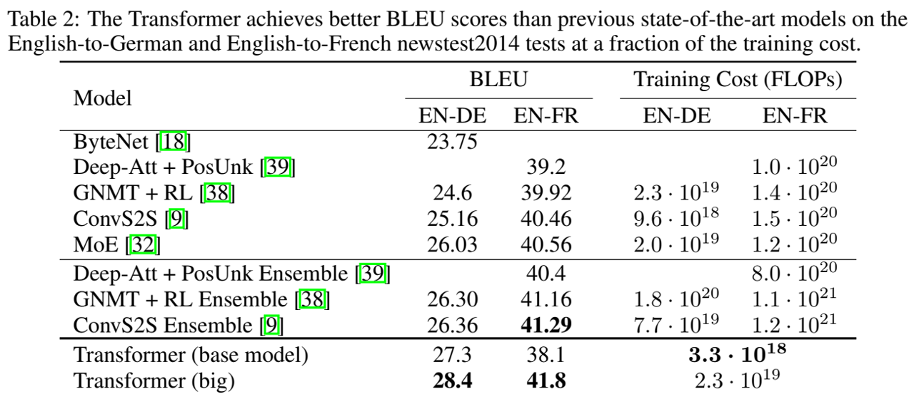

论文阅读三十六：Transformer：Attention Is All You Need
摘要
主流序列转换模型基于复杂的循环或卷积神经网络，包含编码器和解码器。表现最好的模型还通过注意力机制来连接编码器和解码器。我们提出一个新的简单神经网络架构，Transformer，仅基于注意力机制，完全无需循环和卷积。在两个机器翻译任务上的实验表明，这些模型质量优越，同时更加并行化，并需要更少的训练时间。我们的模型在WMT2014英德翻译任务上取得28.4BLEU，改进超过现有最好结果2BLEU以上，包括集成。在WMT2014英法翻译任务上，我们的模型在8个GPUs训练3.5天后，实现新的单一模型最先进的41.8BLEU分数，训练花费是来自文献中最好模型的一小部分。我们证明，通过使用大型和有限制的训练数据将它成功到英语成分解析，我们证明Transformer可以在其他任务上泛化良好。
引言
循环神经网络，尤其是长短期记忆[13]和门控循环[7]神经网络，已经被确立为序列建模和转换问题（如语言建模和及其翻译）的最先进方法[35,2,5]。大量研究继续推动循环语言模型和编码器-解码器架构的边界[38,24,15]。
循环模型通常沿着输入和输出序列的符号位置进行因子计算。将位置与计算时间中的步骤对齐，它们生成隐藏状态序列 ， 作为先前状态 和位置t的输入的函数。这种固有的序列属性无法在训练样本中并行化，在较长序列长度中至关重要，因为内存约束限制了跨样本批处理。最近的工作已经通过因子分解技巧[21]和条件计算[32]在计算效率中取得显著改进，同时还在后者的情况下改进了模型表现。然而，序列计算的根本约束仍存在。
注意机制已成为各种任务中引人注目的序列建模和转换模型的组成部分，允许在输入或输出序列中建模距离无关的依赖[2,19]。然而，除少数例外[27]，这种注意力机制都与循环网络结合使用。
本工作中，我们提出Transformer，一种回避循环的神经网络，而是完全依赖于注意力机制来绘制输入和输出间的全局依赖。Transformer允许更加显著的并行化，且在8个P100 GPUs上训练较少的12个小时后，可以达到最先进的翻译质量。
背景
减少序列计算的目标还形成了Extended Neural GPU[16]、ByteNet[18]和ConvS2S[9]的基础，它们全都使用卷积神经网络作为基本构建模块，对全部输入和输出位置并行化计算隐藏表示。在这些模型中，来自两个任意输入或输出位置的相关信号所需的操作数，随着位置间的距离的增长， ConvS2S呈线性， ByteNet呈对数。这使得学习远距离位置间的依赖更加困难[12]。在Transformer中，这减少到常量数量的操作，尽管由于平均注意力加权位置而以降低有效分辨率为代价，我们用第3.2节所述的多头注意力来抵消这种影响。
自我注意，有时也称为内部注意，是一种将单个序列的不同位置联系起来以计算序列表示的注意机制。自注意力已经应用在各种任务中，包括阅读理解、抽象概括、文本蕴涵以及学习任务无关的序列表示[4,27,28,22]。
端到端记忆网络基于循环注意力机制，而不是序列对齐循环，已经证明在简单语言问答和语言建模任务上表现良好[34]。
然而，据我们所知，Transformer是第一个完全依赖于自注意力来计算其输入和输出表示的转换模型，而不适用序列对齐RNNs或卷积。在接下来的部分中，我们将描述Transformer，激励自注意，并讨论它相对于[17,18]和[9]等模型的优势。
模型架构
大多竞争性的神经序列转换模型具有编码器-解码器结构[5,2,35]。这里，编码器将符号表示的输入序列 映射到连续表示 。给定Z，解码器然后每次一个元素地生成输出符号序列 。在每一步，模型都是自回归的[10]，在生成下一步时，将之前生成的符号作为额外的输入。
编码器和解码器堆栈
编码器：编码器由一组N = 6 个相同层组成。每一层有两个子层。第一个时多头自注意力机制，第二个是简单的、位置感知的全连接前馈网络。我们在两个子层之间使用残差连接[11]，然后进行层归一化[1]。即，每个子层的输出是 ， 其中 是由子层本身实现的函数。为了促进这些残差连接，模型中的所有子层，以及嵌入层，产生的输出维度 。
解码器：解码器也是由N = 6 个相同层组成。除了在每个编码器中的两个子层外，解码器插入第三个子层，在编码器堆栈的输出上执行多头注意力。类似于编码器，我们在每个子层间使用残差连接，然后进行层归一化。我们还修改了在解码器堆栈中的自注意力子层，防止位置关注到后续位置。这种掩码，结合输出嵌入有一个位置的偏移的事实，确保位置i的预测仅依赖于位置小于i的已知输入。
注意力
注意力函数可以描述为将查询和一组键值对映射到输出，其中，查询、键、值和输出全部都是向量。输出作为值的权重和来计算，其中分配给每个值得权重通过查询与相应键的兼容性函数来计算。
缩放点积注意力
我们称我们特殊得注意力为”缩放点积注意力“（图2）。输入包含维度为 的查询和键，以及维度 的值。我们计算查询和所有键点积，除以 ，并应用softmax函数获得值上的权重。
实际中，我们同时在一组查询上计算注意力函数，打包到矩阵 Q 。键和值也打包到一起为 矩阵K 和 V。我们计算输出矩阵为：
最常用的两种注意力函数是加性注意力[2]和点积（乘性）注意力。点积注意力与我们算法中相同，除了缩放因子 。加性注意力使用单一隐藏层的前阔网络来计算兼容性函数。虽然两者在理论复杂度上类似，而点积注意力在实际中更快，且更加空间高效，由于它可以使用高度优化的矩阵乘法代码来实现。
虽然对于较小的 值，两种机制表现类似，然而在没有缩放到较大的 值上，加性注意力优于点积注意力[3]。我们怀疑对于较大的 值，点积的幅度会增大，将softmax函数推向梯度极小的区域。为了抵消这种影响，我们通过 缩放点积。
多头注意力
不是使用 维度的键、值和查询执行单一注意力函数，我们发现使用不同的可学习的线性投影，分别将查询、键和值线性投影到 和 维度h次，是有益的。在查询、键和值的每个投影版本上，我们然后并行执行注意力函数，产生 维输出值。这些值被连接并再次投影，得到最终值，如图2所示。
多头注意力允许模型在不同位置联合关注来自不同表示子空间的信息。如果只有一个注意力，平均值会抑制这种情况。
其中，投影是参数矩阵 和 。
本工作中，我们使用h = 8并行化注意力层，或头。对于这些中的每个，我们使用 。优于每个头的维度减小，总计算成本类似于具有全维度的单头注意力。
模型中的注意力的应用
Transformer以三种不同方式使用多头注意力：
-
在”编码器-解码器“层，查询来自前一个解码器层，且，记忆键和值来自编码器的输出。这样允许在解码器中的每个位置关注输入序列的全部位置。这模仿了典型的编码器-解码器注意力机制，如[38,2,9]。
-
编码器包含自注意力层。在注意力层中，所有键、值和查询都来自同一地方，这种情况下，为编码器前一层的输出。编码器中的每个位置都可以关注前一编码器层的所有位置。
-
类似地，解码器中的自注意力层允许解码器中的每个位置关注解码器中直到该位置的所有位置。 我们需要防止解码器中的左向信息流，来保持自回归属性。我们通过掩码（设置为 ）softmax输入中相应地非法连接的所有值来实现缩放点积内注意力。
位置感知前馈网络
除了注意力子层，我们编码器和解码器中每层都包含一个全连接前馈网络，它分别且相同地应用于每个位置。这包含两个中间具有ReLU激活的线性变化。
虽然线性变换跨不同位置是相同的，但它们使用不同的层间参数。另一种描述方式是将其描述为核大小为1的两个卷积。输入和输出的维度是 ，且内部层的维度为 。
嵌入和Softmax
类似于其他转换模型，我们使用可学习的嵌入来转换输入标记和输出标记到 维的向量。我们还使用通常的线性变换和softmax函数来转换解码器输出到预测的下一标记概率。在我们的模型中，我们在两个嵌入层和预fostmax线性变换之间共享同样的权重矩阵，类似于[30]。在嵌入层中，我们将这些权重乘以 。
位置编码
由于我们的模型不包含循环和卷积，为了模型使用序列顺序，我们必须注入一些关于序列中标记的相对或绝对位置的信息。为此，我们在编码器和解码器堆栈的底部的输入嵌入中添加”位置编码“。该位置编码与嵌入具有同样的维度 ， 因此两者可以相加。有许多欸之编码，学习的和固定的[9]。
本工作中，我们使用不同频率的正弦和余弦函数。
其中，pos是位置，i是维度。即，位置编码的每个维度都对应于一个正弦曲线。波长形成从 到 的几何级数。我们选择该函数因为我们假设它允许模型容易通过相对位置来学习关注，由于对于任意固定的偏移k， 都可以表示为 的线性函数。
我们还尝试使用学习到的位置嵌入[9]，发现这两个版本产生了几乎相同的结果（见表3第（E）行）。我们选择正弦版本，因为它可能允许模型外推到比训练期间遇到的序列长度更长的序列长度。
为何是自注意力
本节中，我们将自注意力层各个方面与循环和卷积层比较，它们常用于将变长符号表示序列 映射到另一个等长序列 ，其中， ，例如典型序列转换编码器或解码器中的隐藏层。为了激励我们使用自我关注，我们认为有三个必要条件。
一个是每层总计算复杂度。另一个是可并行的计算量，由所需的最小序列操作数衡量。
第三是网络中长范围依赖间的路径长度。学习长范围依赖在许多序列转换任务中是一个关键挑战。影响学习这种依赖性的关键因素是网络中前向和后向信号必须遍历的路径长度。在输入和输出序列中任意位置组合间的这种路径越短，越容易学习长范围依赖[12]。因此，我们也比较包含不同层类型的网络中任意两个输入和输出位置间的最大路径长度。
如表1所示，自注意力层使用常数数量的序列性执行操作来连接所有位置，而循环层需要 序列操作。计算复杂度方面，自注意力层比循环层更快，当序列长度n小于表示维度 d时，这是最常见序列表示情况，用于机器翻译中的先进模型，如word-piece[38]和byte-pair[31]表示。为改进涉及非常长序列的任务的计算性能，自注意力可以约束到仅考虑输入序列中以相应的输出位置为中心的大小为r的邻居。这将使最大路径长度增加到 。我们计划在未来的工作中进一步研究这种方法。
核宽 的单一卷积层不能连接输入和输出的所有位置对。为此需要在连续核的情况下堆叠 个卷积层，在膨胀卷积[18]的情况下堆叠 个，从而提升网络中任意两个位置间的最长路径长度。卷积层一般比循环层更加昂贵k倍。然而，可分离卷积[6]，减少了需要的复杂度，到 。即便当 时，然而，可分离卷积的复杂度等于自注意力层和逐点前馈网络层的组合，这时我们模型中采样的方法。
作为附带好处，自注意力可以产生更具可解释性的模型。我们从模型中检查注意力分布，并在附录中给出和讨论示例。单一注意头不仅清楚地学会了执行不同的任务，而且许多似乎表现出与句子的句法和语义结构相关的行为。
训练
本节描述我们模型的训练方案。
5.1 训练数据和批处理
我们在标准 WMT2014英德数据集上训练，它包括大约4.5百万语句对。语句使用字节对（byte-pair）编码[3]来编码，该编码具有约37000个标记的共享源目标词汇表。对于英法，我们使用明显更大的WMT 2014英法数据集，它包括36M语句，并将标记切分到32000单词片段（word-piece）词汇[32]。句子对按大致的序列长度分组在一起。每个训练批包含一组句子对，其中包含大约25000个源标记和25000个目标标记。
硬件和时间表
我们在一台配备8个NVIDIA P100 GPU的机器上训练了我们的模型。对于我们使用整篇论文中描述的超参数的基础模型，每个训练步骤大约需要0.4秒。我们对基础模型进行了总共100,000步或12小时的训练。对于我们的大型模型（如表3底部所示），步进时间为1.0秒。大模型训练了300000步（3.5天）。
优化器
我们使用Adam优化器[20]，其中 和 。我们在训练过程中改变学习率，根据公式：
这相当于在首先的warnmup_steps训练步骤中线性增加学习率，然后按步数的平方根倒数来降低学习率。我们使用 。
正则化
我们在训练阶段使用三类正则化。

残差丢弃 我们应用dropout[33]到每个子层的输出，然后将其加到子层输入并归一化。此外，我们将dropout应用到编码器和解码器堆栈中的嵌入和位置编码的总和。对于基础模型，我们使用丢弃率为 。
标签平滑 训练阶段，我们使用值为 的标签平滑[36]。因为模型学习更加不确定，这回损害困惑度，但改进精度和BLEU分数。
结果
模型变体
英语组分解析
结论
在这项工作中，我们提出了Transformer，这是第一个完全基于注意力的序列转导模型，用多头自注意力取代了编码器-解码器架构中最常用的循环层。
对于翻译任务，Transformer的训练速度明显快于基于循环层或卷积层的架构。在WMT 2014英语到德语和WMT 2014法语到英语的翻译任务中，我们实现了新的技术水平。在前一个任务中，即使是之前报道的所有组合，我们的最佳模型也表现出色。
我们对基于注意力的模型的未来感到兴奋，并计划将其应用于其他任务。我们计划将Transformer扩展到涉及文本以外的输入和输出模式的问题，并研究局部、受限的注意力机制，以有效地处理图像、音频和视频等大型输入和输出。减少代际顺序是我们的另一个研究目标。
我们用来训练和评估模型的代码在 https://github.com/tensorflow/tensor2tensor 。